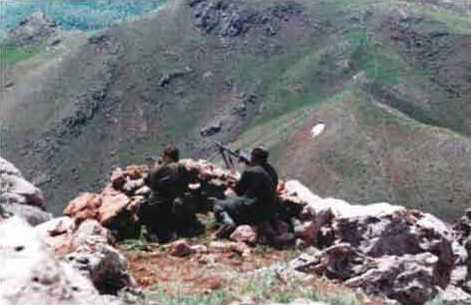

Kaçakçılıkla Mücadele; Samanlı, 1991

“Türkiye’ye silah nerelerden sokulmaktadır? Önce gümrüklerden sokulmaktadır. TIR kamyonları, gümrüklerden çok rahat bir biçimde geçip, istedikleri bölgeye silah satmaktadırlar. Kullanılan ikinci yol, deniz kıyılarıdır. Karadeniz ve Ege’de bu iş için kullanılan özel ve kuytu limanlar bulunmaktadır. Üçüncü yol, güneydoğu bölgesi sınır boylarıdır. Bu yörelerde özellikle canlı hayvan karşılığında silah kaçakçılığı yapılmaktadır.
Kaçakçılık tek kişiye tek olaya bağlanmıyor. Kaçakçılık, çok uluslu bir olgudur. Terör olayı da çok karmaşık bir olaydır ve o da çok uluslu niteliktedir. Silah kaçakçılığı gibi uyuşturucu madde kaçakçılığı da çok ulusludur. Çok uluslu alıcılar ve çok uluslu satıcılar bulunmaktadır.
Kaçakçılığın bütün boyutlarını incelemeden ve çeşitli kaçakçılık dalları arasında somut bağlar kurmadan bu çok uluslu olguyu anlamaya olanak yoktur.”
Uğur Mumcu, Silah Kaçakçılığı ve Terör, 1984”
PKK’yı finanse ettiği için kaçakla uğraşmak zordur, tehlikelidir. Kaçak geçişleri bizim teröristlerin koruması altındadır. Her babayiğit kaçakla uğraşmayı göze alamaz, can pazarıdır bu. Biz bunu göze alırız almasına ama yöneticilerimiz göze alamaz. Onlar için teröristle uğraşmak, kaçakla uğraşmaktan daha iyidir, onlara göre asli görevimiz de terörle mücadele etmektir, kaçak ikinci planda gelir! Sizce doğru mudur bu? Hayır, değil. Kaçak terörü besler, terör de kaçağı ama nedense söylenmez bu. İran ve Irak sınır boylarına gidin, çok ünlü bir slogan kulaktan kulağa yayılır: Kaçakla uğraşanın karakolu basılır! Nasıl olur bu iş, anlatayım.
1991’de Samanlı karakolu, Hakurk’tan çıka gelen üç yüze yakın teröristin saldırısına uğradı, dokuz asker şehit oldu, yedisi ise kaçırıldı. Samanlı, Şemdinli’nin en güney ucundadır. Burası Şemdinli Üçgeni içerisindedir. Üçgen, çoğu kimse için belki bir anlam ifade etmez. Ankara DGM Başsavcısı Sayın Talat Şalk bile Abdullah Öcalan’ın ifadesini alırken, belki de ilk kez duyduğu “üçgen” tabirini önemsememiş olabilir. Öyleyse eğer, haklıdır da. Zira üçgeni bir teröristler bilir, bir de üçgende yaşayanlar. Ne demişti Öcalan, PKK’nın finans kaynaklarını açıklarken: “Benim nazarımda Zagros önemlidir. Surda ticaret çok belirleyicidir. Üçgendedir. Bu bölge kaçakçılığın da merkezidir.”
Üçgende Irak sınırını Hacıbey çizer. Üçlü sınırda doğan Hacıbey Çayı; batıya doğru kıvrıla kıvrıla inerek Irak sınırını çizer ve Samanlı’nın hemen önünden geçerek güneye sarkar ve Irak topraklarına geçer.
Samanlı, kuşun uçmadığı, kervanın geçmediği bir yerde, devletin halka açıldığı bir kapıdır. Karakol Hacıbey’in kenarında, köy ise biraz yukarıda kalır. Ortaklar Gediği bölgenin hakim noktasıdır; aşağısı Gelişen, Samanlı, Horyürek, Karakoç, Derecik, Umurlu ve Yeşilova köylerine, yukarısı ise Şemdinli’ye gider. Kışın kar ya da çamurla kaplı olan gedik pek geçit vermez. Dolayısıyla burada yaşayan insanlar, Şemdinli’ye gidemezse Erbil’e gider Diana’ya gider. Şemdinli bizim, diğer saydıklarım ise Irak’ındır. Karadağlar yönünde kalan Samanlı, sayılan diğer köyler ile aynı bölgede bulunmasına karşın, konumu farklıdır; PKK’nın Hakurk ana kampının yolu üstündedir, aynı zamanda Şemdinli-Irak kaçak yolunun da üstündedir. Dolayısıyla bu karakol iyi görev yaparsa, kaçakçılar da sevmez onu, teröristler de.
1991’de ne oldu? Samanlı, teröristlerin saldırısına uğradı, dokuz asker şehit oldu, yedisi ise kaçırıldı. Öcalan bu olayı anlatırken; “Samanlı baskını taktikte bir açılım sağlar” der. Bu olay ortalığı öyle sanıldığı gibi alt üst etmemiş, aksine, “birkaç çapulcunun işi” denilerek tarihin tozlu sayfalarına terkedilmiştir. Aslında olay çok önemlidir; yedi asker kaçırılmış, dokuzu ise şehit edilmiştir teröristler tarafından. Sonradan yazdıkları Savaş ve Ordu isimli kitapla teröristler bu olayı unutmamış ve taktikte bir açılım olarak değerlendirmiştir. Ama biz Samanlı’yı unutmuş, kaçağın karakolu vurduğunu anlamamışızdır bile.
‘91 Samanlı baskınını doğru etüt etme kaslında bizi doğru sonuçlara ulaştırır ama bu gerçeği ortaya koymak bazılarımızın hoşuna gitmez. Çünkü bu saldırının altında taktik açılım değil kaçakçılık yatar. Dönemin Karakol Komutanı Jandarma Teğmen Feyzullah’tır. Feyzullah gençtir, aklı öyle kaçakçılığa ermez, ne yapar ne de göz yumar. Hudut namustur onun için. Irak’tan ülkemize gelen sığınmacıların neden olduğu bir sorun da getirilen kaçak mallardır, başta silah. Geçit vermez, gece demez gündüz demez kaçakçıların peşinde koşar. Yüz binlerin dayandığı sınırda, PKK yeni kamplarına yerleşiyor-dur ama kimse farkına varmaz. Ana karargâhları Hakurk’tur, köylüler bilir ama söylemez. Çünkü Feyzullah, onlara göre ticareti ama bize göre kaçağı engellemekledir, bu da köylülerin işine gelmez. 1992’de de araştırmıştım bu konuyu ama istediğim cevapları bulamamıştım. Bakmayın bana, daha şimdilerde görüyorum neyin ne olduğunu, ne satmışım meğer.
Feyzullah, Gazi Paşa’nın mektebinde okumuş, her genç teğmen gibi idealist yirmi yaşlarında bir delikanlı komutan olarak Samanlıya atanmıştır. Gençtir, gece demez, gündüz demez yürür, dağlar durduramaz O’nu. Yiğittir, alır silahını tek başına namus bildiği Hacıbey hududunu korumaya çalışır. O yıllarda koyun kuzu İran’da Irak’ta ucuzdur, alır kaçakçılarımız ülkemize getirir ve satar, ekmek parası kazanır. Oralarda bakır ucuzdur, deri ucuzdur, şeker, tütün ucuzdur, velhasıl ucuz olan ne varsa kaçak gelir ve kaçakçı satar, para kazanır. Teröristler Erbil - Diana yolunu, Gelyaraş mevkiinde yani Hayat Vadisi’nin ülkemize bakan yollarında tutmuş haraç alır ama kaçakçılar kimseye demez bunu, haracını verir ve geçer.
Feyzullah Teğmen 1991’de atanmıştır bu bölgeye, daha yeni yeni tanımaktadır halkı, hududu, araziyi, kaçakçılığın ne olduğunu. Teröristler de yeni gelmiştir akın akın Hakurk’a; sığınak yap, etrafı temizle, cephaneleri stokla, eğitim yap, atış yap, işte böyle geçiriyorlardır günlerini. Onlar Feyzullah’ı tanımaz, Feyzullah Teğmen de onları, hiç karşılaşmamışlardır er meydanında.
Feyzullah’ın gözü hudutlardadır çünkü hudut namustur. Hududu geçmek demek namusa el değmek gibi bir şeydir. Görür kaçağı ve kaçakçıyı, hiddetlenir, alır askerlerini bir sağa bir sola Hacıbey’i korumaya kalkar. Her gün vukuat; şu kadar kaçak, şu kadar kaçakçı ele geçti, gibilerinden.
Kaçakçılar çok kızar bu işe; Erbil, Diana burnunun dibinde, ne var yani üç kuruşluk ekmek parası. Onlar Feyzullah’ı anlayamaz, Feyzullah da onları. Birine göre kaçak olan mal diğerine göre ticaret, birine göre namus olan hudut, diğerine göre bir çaydır, içinde balıkların yüzdüğü, adı Hacı Bey olan, hele ki Feyzullah bunları hiç mi hiç bilmez, dedim ya Hacıbey huduttur, hudut ise namustur, kimse gelemez kimse geçemez. Bölge halkının şikâyetleri Kaymakam’a gitmez, Vali’ye gitmez. İçişleri Bakanı’na gitmez, Başbakan’a hatta Cumhur’un Başkanı’na dahi gitmez, onlar da halkın sesini zaten duyamaz çünkü birbirlerine uzaktırlar ama nedense bu şikâyet bizim teröristlerin kulağına gider. İşte o zaman oyun başlar.
İran ve Irak sınır boylarındaki terörist istihbaratının temeli kaçakçılığa dayanır. Bu amaçla sınırı gelip geçen kaçakçılar, teröristlerin ihtiyaç duyduğu haberleri onlara ulaştırır. Yapmazsa bunu zaten, kaçakçılık da yapamaz, teröristler işi çabuk çözer ve hesabını da sorar. Samanlı karakolunun etkin faaliyetleri kısa zamanda Hakurk’da duyulmuştur. Hemen toplantı yapılır ve Samanlıya eylem kararı alınır. Amaç; bu karakolu etkisiz hale getirmek, kaçakçılığı sürdürmek, para kazanmak ve istihbaratı sürdürmektir. Toplantıda sözü, Hakurk ana üs heval komutanı alır ve konuşmaya başlar:
- Hevaller. Tam karşımızda düşmanın Samanlı üssü var. Ağır silahları var. Havanları var, makineli tüfekleri, uçaksavarları var. Bu karakolu ortadan kaldırırsak, Şemdinli yolu açılacaktır. Yarın İskender’in mangası, keşfe çıksın. Bakalım bu düşman üssünde neler oluyor bitiyor, bize bir hafta sonra rapor versin, der ve konuyu kapatır.
Öyle tartışma yok, fikir teatisi yok, durum muhakemesi yok, terörist bunlar, düşünmeleri gerekmez. İskender, on beş kişilik grubunu toplar, görev bölümü yapar, “Yarın gece yarısı hareket”, der ve sığınağına gider. Gece yarısı grup toplanmış ve Ari Gediği’ne doğru harekete geçmiştir bile. Herkes aktif bir görev almış olmanın heyecanı içerisindedir ama biraz da endişeli. Gediği aşar, Ari düzlüğüne sessizce gelirler. O sıralar düşman toprağına adım atmaktan korktukları için Hacıbey’i geçmez, soldan batıya doğru yamaçlardan yol alırlar. Samanlı’yı en iyi gören yer Nahal Tepe’dir, hemen çıkarlar oraya. Artık gün ağarmaya başlamıştır. Sessizce mevzilenirler.
Gün ağardıktan sonra yakın savunma mevzilerinde nöbet tutan askerler yavaş yavaş yuvalarına yani hikâyemizde geçen Samanlı Karakolu’na doğru dönmeye başlar. Hudut karakol yaşamı zordur, can bile zor dayanır. On yılımız geçti hudutlarda, karakollarda; aldıkları nefes yabancı değil, içtikleri su yabancı değil. Karakolda bir yıl demek; birinin aynı olan 365 gündüz ve 365 gece demektir, hiç değişmez. Sabahtan Öğleye uyku, Öğleden akşama eğitim, akşamdan sabaha nöbet, her gün ve de her gece. En zoru da nöbettir çünkü geceler çok uzundur hiç bitmez.16
Nöbetin ilk saatleri heyecanlıdır; bir sağa bakarsınız, bir sola, “gelen giden var mı” diye. Sonra düşünmeye başlarsınız, “sağdan gelirse ne yaparım, soldan gelirse ne yaparım” diye. Karşınıza neyin çıkabileceği konusunda bir fikriniz yoktur. Bu ilk saatler hep sorularla geçer; “karşıma kim çıkar, kaç kişi, silahı var mı, ateş edeyim mi” gibisinden ve bu soruların bir sınırı yoktur. Heyecan, ilk iki saati müteakip yerini düşüncelere bırakır. Hava yeni karardığından, daha biraz Önce etrafı görüp bildiğinizden, kendinizde güven vardır. Düşünceleriniz kaynağında, bir yandan hayalleriniz diğer yanda ise endişenin yol açtığı korku yatar. İlk saatlerde hayaller ağır basar ve başlarsınız geçmişi düşünmeye; Önce ailenizi, varsa eşinizi, çocuğunuzu, sonra arkadaşlarınızı. Hemen arkasından hayallerin çatışması başlar; “Bana bunu niye yaptı, akşam niye geç geldi, hâlbuki onu sevmiştim, beni askere uğurlamaya niye gelmedi” gibi. Başlarsınız hayallerinizle hesaplaşmaya. Bu sizi gece yansına kadar götürür, ama daha nöbet bitmemiştir ve sabaha daha beş saat vardır. Bu ilk saatlerden sonra hayaller de biler. Tekrar hududa dönersiniz ve etrafınıza bakmaya başlarsınız. Karanlık, kopkoyu bir karanlık. Bir şeyler göreyim diye çabalarsınız, ama göremezsiniz. Arkadaşınızla konuşmaya çalışır, korkunuzu yenmek istersiniz. Ama o ya uyuyordur ya da daha hayalleri bitmemiştir. Dolayısıyla rahatsız edilmek istemez. Tekrar yalnız kalırsınız, korkunuzla, yarı silik hayallerinizle ve hudutla. Zamanı gelmiştir ve yeniden korkmaya başlarsınız. Bu korku sizin bildiğiniz gibi bir korku değildir. Başka bir şey, endişe gibi, bilinmez bir şeye karşı ne yapacağınızı bilememek gibi. Zira bu bilinmez sınırlı olmadığı gibi, düşüncelerinizin de sınırı yoktur. İşte korku bu düşüncelerden doğar. Yoksa “ölecek miyim, beni vuracaklar mı” gibi düşüncelerden değil. Başlarsınız Önce sesler duymaya. Dikkatle dinlersiniz, birtakım çıtırtı sesleri gelir size doğru. “Biri mi var” der, yeniden bakarsınız ama göremezsiniz. Yok bir şey, deyip kendinizi teselli etmeye çalışırsınız. Biraz sonra bir gölge, bir karartı süratle sınırı geçer. “Ne oluyor” der, tüfeğinizi doldurursunuz. Eliniz artık tetiktedir. “Bir daha görürsem ateş ederim” diyerek soğukkanlı olmaya çalışırsınız. Aslında bu korkudur, ama korkuyorum demezsiniz. Size göre haklısınızdır ve korkmuyorsunuzdur. Çok geçmez, gölgeler dans etmeye başlar hudut çizgisinde. Bu size daha çok korku verir. Ne yapacağınızı bilememekten gelen bir korku. Korku bütün vücudunuzu, beyninizi sarmıştır artık. Bir an gözlerinizi kapar, “ne olacaksa olsun” der ve basarsınız tetiğe. Bir daha, bir daha. Yanınızdaki arkadaşınız korkar o da başlar ateş etmeye. Sağdaki mevzi, soldaki mevzi, derken bir bakarsınız ki, beş kilometrelik bir alanda bütün mevziler çılgınca ateş ediyordur. Kimse susturamaz bu ateşi. Çünkü hepsi aynı haldedir. Ateş etmek demek korkuyu yenmek demektir. Beş dakika kadar sürer bu ateş, yavaş yavaş ve kendiliğinden susar. Artık herkes uyanmıştır, daha doğrusu herkes korkusunu bastırmıştır. Yanda ateş edenleri görünce yalnız olmadığınızı anlamışsınızdır. Sinirleriniz yatışır, sakinleşirsiniz. Derinden bir oh çekip sabahı edersiniz, diğer arkadaşlarınız gibi.
Bu duyguyu herkes bilmez, yaşayan bilir. Bu duygu anlatılmaz yaşanır. Ama bu bir gece değil ki, çok gece çok, insana, hoş geldin ölüm, dedirtecek kadar çok.
İşte böyle bir gecenin ardından yorgun argın Samanlı’ya dönen askerler koğuşa zor atar kendini, kısa bir temizlik, kısa bir yemek ve doğru yatak. Feyzullah Teğmen de gece hiç uyumamıştır. Telsize gelir. Vukuat tekmili alır ve O da uyur, yorucu geçen her gün gibi bir günün ardından. Ayakta bir telsizci kalmıştır komşu birliklerin muhaberesini takip için. Bir koğuşçu kalmıştır, uyuyanlara göz kulak olmak için. Beş on gündüz nöbetçisi kalmıştır hududu ve gelip geçeni gözlemek için, diğerlerinin hepsi uykuda.
Keşif faaliyetini sürdüren Heval İskender’in grubu her gün Nahal Tepe’ye gelir ve karakolu gözetler, bir gün, iki gün, üç gün Karakolda faaliyetler hep aynıdır; gündüz nöbet, gece pusu, gece pusudan dönenler gündüz uykuda, gece uyuyanlar ise gündüz nöbette. Defterinden bir kâğıt koparır ve karakolun basit bir krokisini yapar. Silahların bulunduğu yere işaret koyar, askerlerin nöbet yerlerini işaretler, sayılarını yazar. Nihayet bir haftalık görev biter ve Hakurk’a döner. Gördüklerini anlatır. Plan basittir; geceden ilerleme ve tertiplenme, gün ışırken roketlerin yaratacağı panikte sızma ve imha.
Baskın sabaha karşı gerçekleşir. Karakol elli kişi, saldıran iki yüz elli kişi, Feyzullah ne yapsın! Dokuz şehit, yedi asker kayıp. Tabur Komutanı Yarbay Turgut zamanında yardıma gelememiştir. Saldırıyı yapan teröristlerin bir kısmı Karakoç, Gasto, Ari üzerinden, kalanı ise Hayat Vadisi, Gelyaraş, Kanyaraş üzerinden Hakurk’a döner. İlk saldırıdır bu, kimse ne olup bittiğini anlamaz. Suç köylüye yıkılır, güya onlar da katılmıştır saldırıya. Karakolun yeri değiştirilmekle kalmaz, Feyzullah da görevden alınır ve olay kapanır. PKK bu olayı, “taktikte açılım” olarak değerlendirir ve kitaplarında yazar.
1992 yılında Binbaşı Sarızeybek Şemdinli’ye atanır. Olayı öğrenir ve doğru Samanlı’ya gider. Bina vardır ama karakol artık yoktur. Türk bayrağı da yoktur. Karakol olmayınca Mehmetçik de yoktur, devlet de. Ama duvarda PKK’nın izleri vardır; roket izleri, uçaksavar izleri, kurşun izleri. Tıpkı kendisinden önce kapatılan Horyürek karakolu gibi, Ormancık karakolu gibi, Mağaraönü, Hazne, Mezargediği, Tanyolu karakolları gibi. Ormancık, PKK’nın Basyan kampından Şemdinli’ye giriş yaptığı noktadadır ve kapatılmıştır. Mağaraönü, PKK’nın Jerma kampından ülkemize giriş yaptığı noktadadır ve kapatılmıştır. Hazne, Mezargediği ve Tanyolu karakolları, hem PKK’nın hem de kaçakçıların ana giriş güzergâhı olan Zagroş - Şemdinli hattı üzerindedir ve hepsi kapatılmıştır. Güneyde bir Samanlı vardır hem PKK’yı hem kaçağı kesen, o da 91’de kapatılmıştır.
Sarızeybek Samanlı baskınını araştırır, soruşturur ve nedenini anlar: Kaçakçılıkla mücadele!
PKK neden saldırmıştır Samanlı’ya? Bunun sebebi paradır. PKK kaçaktan haraç alır. Sözde gümrük noktaları vardır sınır boylarında ama kimse bunu söylemez, söylemesi de işine gelmez. Gayet masumane duygularla bunu yönetenlere söylerseniz, alacağınız cevap, “kaçağı durdur”, olacaktır. Ama bunu söyleyen bilmez mi ki, yüzyıllardır çivi çakılmamış bir hudutta, bu asker kaçağı nasıl keser? Kesemez. Bunu onlar da bilir, bilir ama çare yoktur onlara göre; PKK’nın sözde gümrüğü İran’dadır, Irak’tadır, müdahale edemezsiniz. Bu çaresizlik bize biçilmiş kader midir? Hayır, değildir. Ama kim göze alacak İran’a kafa tutmayı ya da küçük küçük Özel operasyonlar yapmayı? Irak’a müdahaleyi kim göze alacak? Kimse almaz, almayınca da olan Feyzullah’a olur, köylüye olur. Çaresiz kalanlar suçu onlara atar, gerçek ise bir başkadır ama kimse söylemez.
PKK neden saldırmıştır Samanlı’ya? Samanlı, güneyden yapılan kaçakçılığın geçiş yolu üzerinde, Hakurk’un ülkemize açılan kapısı üzerindedir. Bu yol kesilirse, kaçak da kesilir. Bu kaçak kesilirse PKK haraç alamaz. Bu bölgede sınırlar korunursa, PKK geçiş yapamaz. Kaçakçı gümrükten geçemezse, PKK haber alamaz, siparişlerini veremez, Irak’a hapsolur. Ama eylem sonrası kaçmak lazım, uyuşturucu kaçağından haraç almak lazım, Yüksekova ve Başkale’yi, hatta Van’ı kontrol altında tutmak lazım, nasıl olacak bu iş? Samanlı, evet Samanlı, bu karakolu etkisiz hale getirmek, bütün kapıları açar size. İşte, 91’de PKK Samanlı’ya saldırdı, yollar açıldı, adına taktikte yeni açılım, dedi. Kimse bunu anlamak istemedi, kimse duymak istemedi, kimse kaçağın terörü beslediğini görmek istemedi. Onlar istemeyince işler mi düzeldi? Hayır. Bu saldırı sonrası, “kaçakla uğraşanın, karakolu basılır” sözü dalga dalga sınır boylarına yayıldı. Her yiğit de yoğurdu kendine göre yedi; kimi kaçakla uğraştı karakolu basıldı, kimi ise uğraşmadı, “ben hiç şehit vermedim”, diyerek kendini avuttu. Uğraşmayanların beslediği teröristler geldi bizi vurdu. Yazık ki ne yazık!
İşte üçgen böyle bir yerdir. Böyle bir arazide Samanlı ne yapsın? Hudut namus der, hududu korumaya çalışır ama bu hudut bir Samanlı’yla korunmaz ki. Bunu da herkes bilir ama kimse söylemez.
Binbaşı Ersever itiraflarında Samanlı baskınına değiniyor ve bu olayı PKK’nın Botan - Behdinan savaş hükümeti kurma stratejisi çerçevesinde açıklıyor17 (Gazeteci-Yazar Soner Yalçın Soruyor, Binbaşı Ersever cevaplıyor:
Soner Yalçın: Şimdi, “92 yılında. Çukurca bölgesinde Alan, Aktütün, Derecik karakolları baskınları oldu (Yazarın notu: Bu karakollar Çukurca’nın değil, Şemdinli’nin karakollarıdır). Buralardaki ölü sayısı açıklandığından daha fazla deniliyor. Yani 28 - 30 civarında (Yazarın notu: Alan’da 19, Aktütün’de 22, Derecikle ise 33 askerimiz şehit olmuştur). Bu karakolların tümü jandarma karakolları. Bunların hedef seçilmesinin nedeni, sadece bir PKK olayı mı? Deniyor ki: “Bu karakollara bağlı olan tabur, kaçakçılığı önlemeye çalışıyordu (Yazarın notu: Bu taburun komutanı ben idim.). Kaçakçılara göz yummuyordu. Bilinçli olarak bu karakolları hedef seçtiler. Bölgedeki bazı karakolların hemen 200 metre ötesinden kaçakçılar girer çıkar, orada bir işbirliği vardır ama buralarda kaçakçılara hayat hakkı verilmiyordu. O yüzden buralar basıldı.” Siz böyle bir duyum aldınız mı?
Cem Ersever: Bakınız, bu sınır hattı, PKK’nın Botan - Behdinan dediği iki bölge arasındaki sınırdır. Dolayısıyla söylediğiniz karakollar, daha birkaç tane daha var, PKK’nın ikmal yolları üzerindedir. Kutalman’ın, Şirin’in daha doğrusu, Şirin Çukurca’nın Çukurca’nın güneyindeki kampların bulunduğu ARİ kampı, ERA kampı, o bölgenin bulunduğu yerler (Yazarın notu: Ari kampı, Şemdinli güneyindedir). Şimdi buraya elbette lojistik destek lazım. Kaçakçılıkta bir kilo çayı, oyuncağı, garibanın sırtçının sırtlayıp götürmesi, geçirmesi, getirmesi, şunu yapması, bunu yapması, o eskidendi. Elbette bu karakolların görevi orada PKK’nın ikmal yollarını kesmektir. Lojistik desteğini kesmektir. Köylüler kaçakçılık yapıyorlar, halen de yapıyorlar. Kuzey Irak’a halen mal gidiyor. Şu anda Silopi Habur’dan, Gıtta KÖyü’ne doğru. Çalışkan Köyü’ne doğru olan kesimde resmen, Celal Talabani’nin, KDP’nin, Barzani’nin peşmergeleri Türkiye’ye silah sokuyor. Bunu durduramazsınız. Bu bir sirkülasyon. Gidiyor, geliyorlar. Al gülüm, ver gülüm işi. Bunu yapıyorlar. Ama anlaşmalı mı? Değil. Kesinlikle anlaşmalı değil. Elbette ki o karakollar ortadan kaldırılması gerektiği için PKK saldırmıştır. Basit bir PKK - Kaçakçı ilişkisi değil. Kaçakçı da PKK’lı zaten. Onun ikmal yolları üzerinde çalışan lojistik unsurları PKK’nın.
Mustafa Demir: PKK’lı olmayan tek bir kaçakçı yoktur. Yoksa kaçakçılık yapamaz.
Cem Ersever: Yapamaz zaten. Karşı tarafa gittiğinde her yere PKK hakim. Oraya haraç vermek zorunda, götürdüğü malları vermek zorunda. Şimdi düşününüz, Cizre gibi, Silopi gibi, Şırnak gibi, Uludere gibi. Çukurca gibi, Yüksekova gibi yerlerde köylüden, işyeri sahibinden milyonlarca milyarlarca haraç toplayan bir adam, kalkıp sırf kendi çıkarı için kaçakçılık yapan birisinden haraç almaz mı?
Mustafa Demir: Şimdi bir de bu noktadaki karakolları, özellikle Botan - Behdinan arasındaki hattı kaldırma, PKK’yı Şemdinli’ye yöneltmiştir. Ancak halk PKK’yı istemiyor.
Cem Ersever: Şemdinli direniyor.
Mustafa Demir: Şemdinli PKK’yı dışlamıştır, kesinlikle şehre almıyor. Ama geliş gidişlerde Şemdinli’ye yönelip, kendi mantıklarına göre Şemdinli’yi düşürebilmeleri, için çok güçlü kuvvetlerle gelmeleri gerekiyor. Ve öncelikle de o yol üzerindeki karakolları imha etmeleri gerekiyor.
C. E.: Abdullah Öcalan Şemdinli üçgenini sakız gibi ağzında çiğner, devamlı söyler bunu. Bunun sebebi vardır. Tabi o bölgede bir zamanlar neydi sloganı: “Her şey bir parça özgür vatan için”. Her şey bir parça özgür vatan toprağı için dediği yer, Şemdinli bölgesidir. Ama bu Şemdinli’ye gerilla güçlerinin, PKK güçlerinin girip orayı işgal etmesi anlamında değildir. Bu karakollara saldırıyla Şemdinli’yi ele geçirecek. Strateji odur. Bu nedenle saldırıyor.
M. D.: Şemdinli halkı Cizre, Silopi, Şırnak halkı gibi değildir. PKK’ya karşı gerçekten çok etkin mücadele vermiş bir halktır.”
Binbaşı Ersever’in etkili olduğu bölge, Mardin, Şırnak, Diyarbakır hattıdır. O yıllarda Şemdinli’ye hiç gelmemiştir belki de hiç görmemiştir. Ama PKK’nın stratejisini, örgüt yapısını, taktik ve tekniklerini çok iyi bildiği için, bu konuda elbet söyleyecekleri vardır ve genelde söyledikleri doğrudur, eksik olabilir ama yanlış olamaz. Şemdinli’deki karakol baskınlarını salt PKK’ya bağlamak, eksik bir bilgi olarak karşımıza çıkar. Anlatayım18:
‘91 yılı, PKK’nın Saddam’ın silahlarını topladığı yıldır. Aynı zamanda Irak’ta Saddam’ın ekonomik tesislerinin de yağmalandığı yıldır, sığınmacılar yoluyla kaçakçılığın ön plana çıktığı yıldır. PKK’nın ana üssü Hakurk’u, kaçakçılığı, geçiş yollarını dikkate aldığınızda Şemdinli gündeme oturur. Çünkü Şemdinli bu saydıklarımın ortasındadır.
Sadece ‘92’de yakalan kaçak bakırın binlerce ton olduğunu, yakalanan ya da yakalanmadan geçen hayvan miktarının yüz binler olduğunu düşündüğünüzde kaçakçılığın önemi daha da ortaya çıkar. Kaçak, para demektir, herkese dağılır bu para; atanmışlara, seçilmişlere, PKK’ya, koruculara, halka, saymakla bitmez. Bakın Hakkari Ağır Ceza’daki kaçakçılık dosyalarına, çoğu beraatle sonuçlanmış ve kaçakçılar kaçak mallarını alıp gözlerimizin gözü önünde elini kolunu sallayıp gitmiştir. Hazine avukatları ya duruşmalara girmemiş ya da bu kararlara itiraz etmemiştir ve bu hesap hiçbir zaman sorulmamıştır. Ama kaçak, aynı zamanda istihbarat demektir, lojistik destek demektir; PKK, güvenlik kuvvetlerinin istihbaratını kaçakçılar vasıtasıyla yapar, ihtiyaç duyduğu malzemeleri temin eder. Ama nedense şu kaçakçılık olayları hak ettiği önemi bulmuyor, kaçağın terörü beslediği bilinmesine rağmen, yazık.
Gelelim 92’deki karakol baskınlarına; Alan, Aktütün ve Derecik.
‘91 Samanlı baskınından sonra Şemdinli’de o yıl içinde ikinci bir karakol baskını yaşanmamıştır. Samanlı olayından sonra ise, kaçakçılık alıp başını gitmiştir. Güvenlik kuvvetleri kışlasına çekilmiş, teröristle uğraşmaktan kaçağa müdahale edememiştir. 92’deki Alan çatışması, 30 Ağustos’ta yaşanmıştır. Saldırıdan üç gün önce yaklaşık elli katırlık bir kaçak kervanını bu karakolun yok ettiğini biliyor muydunuz? 1992’de yakalanan toplam kaçağın milyon dolarlar değerinde olduğunu biliyor muydunuz? Alınan tedbirler sonucu Şemdinli bölgesinde kaçağın hemen hemen durma noktasına da geldiğini biliyor muydunuz? Kaçak durunca ne oldu? Para durdu hani şu kara olan. PKK güvenlik güçleri hakkında istihbarat yapamaz oldu, lojistiği kesildi. Alan kontrolünü kaybetti. Peki, neden Alan Karakolu’na hedef olarak seçildi?
Teröristin coğrafyasına bakalım. Alan, eski adıyla Helena Koyu, PKK’nın İran’daki Jerma kampının hemen doğusundadır, bir iki saatlik yaya yürüyüşü. Alan, Şemdinli’nin en Önemli kaçak patikası üzerinde yer alır. Alan’ın hemen batısındaki Dumanlı Dağ ve Kralın Kızında PKK’nın gümrük noktaları vardır. Alan kuzeyindeki Mağaraönü, PKK’nın ana giriş yoludur. Bu karakol, kışlasından çıkıp bu coğrafyadaki kaçağa müdahale edince ortalık karıştı. PKK, bize ders vermek için geldi Alan’a ama dersini alıp gitti. Sonrası zaten bir intikama dönüştü, sırasıyla ve tüm güçleriyle Aktütün’e geldiler, Derecik’e geldiler, büyük kayıplar vererek Hakurk’a çekildiler. Bakın, “Savaş ve Ordu Kılavuzu” isimli kitaplarında ne diyor teröristler bu çatışmalar için:
“Mawan (Samanlı) eylemiyle de denilebilir ki, 1985’lerden bu yana bir türlü geliştirilemeyen bir taktik gelişme ortaya çıkarılmıştır, ama düşmanın buna karşı yeni taktik düzenlemeye gitmesi durumunda, var olanı aşıp yeni taktik atılımlar gerçekleştireceğimize, aynı biçimde karakol ve tepe eylemlerinde ısrar edilmiş ve bu ağır sonuçlar yaratılmıştır. Özellikle askeri açıdan hangi mantıkla yapıldığı bile kolay kolay izah bulmayan ve erken iktidar hastalığının örneklerinden olan Rubaruk (Şemdinli - Derecik), Helena (Şemdinli - Alan), Bezele (Şemdinli - Aktütün) eylemleri, âdeta çılgınca diyebileceğimiz girişimler olarak, kaldıramayacağımız kayıplarla sonuçlanmıştır.”
O yıllarda Abdullah Öcalan’ın Botan - Behdinan savaş hükümeti kurma planı vardır, doğrudur. Bir parça Özgür vatan, sloganıyla Şemdinli’yi hedef aldığı da doğrudur. Bu karakollara saldırarak sözde bayraklarını göndere çekme hayali de vardır. Biz kaçakçılıkla mücadele ederek bu süreci hızlandırdık. Etmeseydik, PKK bu karakollara saldırmayacak mıydı? Hayır, saldıracaktı. Ama ne zaman? İşte biz bu zamanı Öne aldık. İyi ki de aldık. Bizim atanmış ve seçilmişlerimiz, bir ayda verdiğimiz 73 şehidin sayesinde PKK’nın Kuzey Irak’ta olduğunu anladı ve Ekim ‘92 Harekâtı’nı yaptı.
Tabi, bir de olayın psikolojik harekât boyutu var. Gene o dönemde PKK’nın ana hedefi, bir karakolu ele geçirip sözde bayrağını dalgalandırmaktı. Alan çatışmasında az kalsın bu hedefine ulaşıyordu. Bir anda geldiler, yüzlercesiyle geldiler, güçlü silahlarla geldiler, İran’dan geldiler. Şaşırdı Mehmetçiklerim, telaş ettiler. Bir anda teröristlerle burun buruna geldiler. Hainliğin, kalleşliğin kurbanı oldular. Tabur komutanı altı askerle yardıma giderken, PKK birçok mevzilere girmişti bile, karakola doğru yürümeye başlamıştı bile. Tabur komutanı ve altı askeri pusuya düştü, mayına bastı, altı askerle yüzlerce teröristin ortasında kaldı, saatlerce çatıştılar. Ama öldürmeyen Allah öldürmedi ve askerin yardımına yetiştiler. Ya yardıma gidemeseydi? Bunu düşünmek bile istemiyorum, ürpertiyor beni. Ben seçilmiş ve atanmışlara kızıyorum; bir ülke böyle mi yönetilir, böyle mi idare edilir? Sağır sultanın bile duyduğu, bildiği, PKK varlığını siz nasıl olur da bilemezsiniz? Kaçakçılığın terörü beslediğini nasıl anlayamazsınız? Bunun adı nedir?
Kaçağı sadece para olarak düşünürseniz yanılırsınız. Bir de silahlar var, kaçak yoluyla ülkemize giren. Bunun hesabını kimsenin yaptığı yok. Zamanında güvenlik güçleri kontrolünde girdi bu silahlar, içinde havan var, uçaksavar var, makineli tüfek var. Erbil’de silah pazarı var, her türlü silah satılıyor. Hududu koruyamazsanız, kaçak silahın yurda girişini engelleyemezsiniz. ‘92’yi unutmayın, PKK’ya karşı bir ara çaresiz kaldığımız yılları. Halkımızı koruyamadık teröristlerden. Silahlanın, kendinizi koruyun, dedik. Namuslarını, canlarını korumak için silahlandılar, çatıştılar, şehit oldular. Ama artık bu silah sahiplerinin tespiti gerek, silahların başka ellere geçmesinin önlenmesi gerek.
Şimdi durum eskisi gibi değil, PKK o kadar etkin değil artık. Koruculara sahip çıkmanın, kaçak olarak yurda giren silahları kontrol altına almanın zamanı geldi. Güvenlik güçleri biliyor, kimde ne silah var. Korucular yeniden teşkilatlanmalı, silahları kayda alınmalıdır. Koruculuğun geçiciliği kaldırılmalı, sosyal haklar verilmeli, köy bekçisi gibi bir statüye kavuşturulmalıdır. Çok ihmal ettik onları, yalnız bıraktık. Öcalan ne diyor? Korucular silah bıraksın. Avrupa Birliği ne diyor? Korucu teşkilatı kaldırılsın. Sizinle PKK’ya karşı savaşanları yalnız bırakmak hata olur. Onları terk etmek olur kaderlerine. Bunu yapmayın, aldatmış olursunuz size güvenenleri, devlete güvenenleri.
Biliniz ki; para kaynağı bulamayan terörist yaşayamaz. Bizde para demek; kaçakçılık demek, terör demektir. Mücadele etmek zordur; kara paraya bulaşmamış ve riski göze alabilen yöneticiler olması gerekir etrafınızda, size destek veren, destek olan. Yoksa eğer, bir başına Samanlı ne yapsın, Şemdinli ne yapsın? İşte coğrafya bu, kaçak bu, terörist bu. İşte bizim ülkemiz bu!